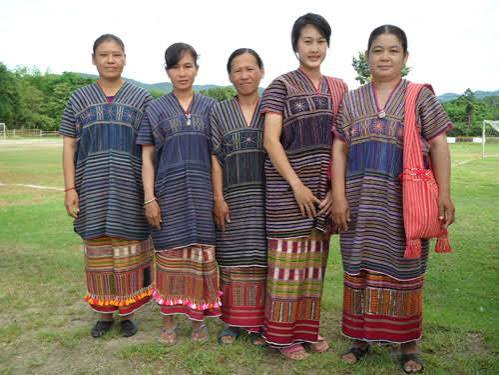

กะเหรี่ยงราชบุรี

ชาวไทยเชื้อสายกะเหรี่ยงในจังหวัดราชบุรี เป็นหนึ่งในแปดกลุ่มชาติพันธุ์สำคัญที่ร่วมกันสร้างความหลากหลายทางวัฒนธรรมให้กับจังหวัด โดยส่วนใหญ่สืบเชื้อสายมาจากกะเหรี่ยงกลุ่มโพล่ง (หรือกะเหรี่ยงโปว์) ที่อพยพย้ายถิ่นฐานมาจากเมืองทวายในประเทศเมียนมาตั้งแต่ช่วงต้นกรุงรัตนโกสินทร์หรือราว 200 กว่าปีก่อน เพื่อหลบหนีภัยสงครามและการรุกราน บรรพบุรุษชาวกะเหรี่ยงได้เดินทางข้ามเทือกเขาตะนาวศรีเข้ามาพึ่งพระบรมโพธิสมภาร โดยเลือกตั้งรกรากอยู่ตามแนวชายแดนตะวันตกและขยายชุมชนอยู่บริเวณลุ่มน้ำภาชี ซึ่งในปัจจุบันกระจายตัวอยู่ในเขตอำเภอสวนผึ้ง และอำเภอบ้านคา